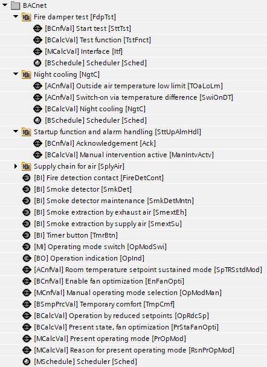
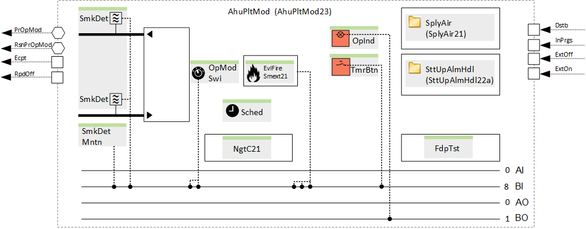
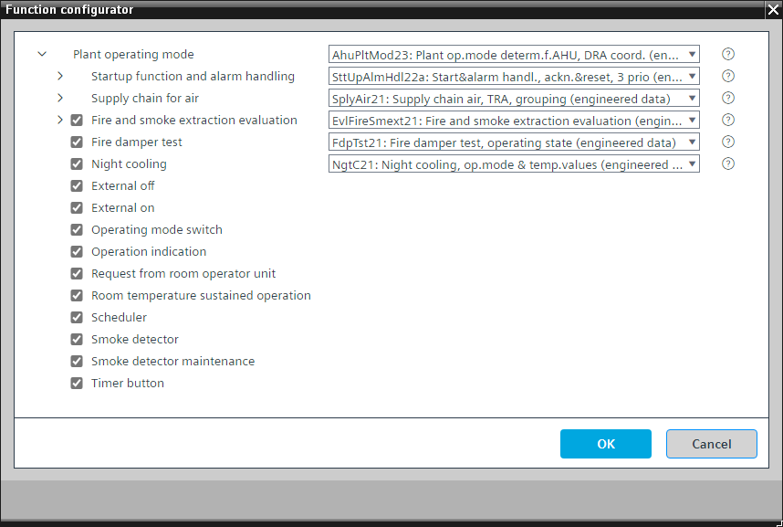

[AhuPltMod23] 空气处理机组的工厂运行模式确定，DRA 协调
Program block, name / node subtype:[AhuPltMod23] 空气处理机组的工厂运行模式确定，DRA 协调
Library hierarchy: Ventilation and air conditioning equipment
Family: AhuPltMod
项目树 | 图表 |
|---|---|
 |  |
Configurator


程序块存储在没有 I/Os. 的库中 使用auto-create and auto-connect函数创建 I/Os 和 /or 将它们连接到接口块，例如 R_A、CMD_B。或者，从包含库中预定义 I/Os 的文件夹中取出 I/Os，并从工厂中取出 /or，并将它们连接到接口块。
具有一级或压力或气流控制风扇的空气处理机组的设备模式确定
姓名 | 描述 | 类型 | 报警/通知类 | 趋势/类型 | |
|---|---|---|---|---|---|
PrOpMod | Present operating mode | MCalcVal: Multistate calculated value | No | 是的，4 | |
RsnPrOpMod | Reason for present operating mode | MCalcVal: Multistate calculated value | No | 是的，4 | |
OpModMan | Manual operating mode selection | MCnfVal: Multistate configuration value | No | 是的，4 | |
SplyAir | Supply chain for air | [SplyAir21] Supply chain air, data exchange with rooms (TRA integration), via grouping mechanism | N/A | N/A | |
SttUpAlmHdl | Startup function and alarm handling | [SttUpAlmHdl22a] Startup & alarm handling, acknowledge & reset, 3 priorities | N/A | N/A | |
姓名 | 描述 | 类型 | 报警/通知类 | 趋势/类型 | |
|---|---|---|---|---|---|
EvlFireSmext | Fire and smoke extraction evaluation | N/A | N/A | ||
FdpTst | Fire damper test | N/A | N/A | ||
OpModSwi | Operating mode switch | MI：多态输入 | No | 是的，4 | |
Sched | Scheduler | MSchedule: Multistate scheduler | No | No | |
OpInd | Operation indication | BO：二进制输出 | No | 是的 | |
NgtC | Night cooling | [NgtC21] Night cooling, based on the operating mode in the rooms and temperature values | N/A | N/A | |
SmkDet | Smoke detector | BI：二进制输入 | 是的，4 | No | |
SmkDetMntn | Smoke detector maintenance | BI：二进制输入 | 是的，8 | No | |
SpTRSstdMod | Room temperature setpoint sustained mode | ACnfVal: Analog configuration value | No | No | |
TmrBtn | Timer button | BI：二进制输入 | No | 是的，4 | |
描述 |
|---|
Request from room operator unit |
External on |
External off |